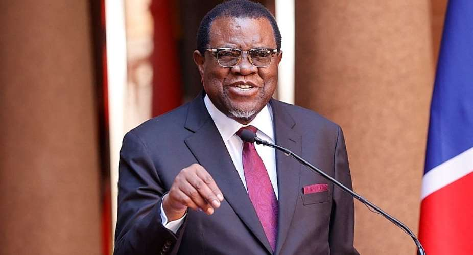

Hage Gottfried Geingob
Hage Geingob, born on August 3, 1941, in Grootfontein, Namibia, was a significant figure in the country's political landscape and served as its President until his passing on February 4, 2024. Geingob's educational journey began at Augustinium Secondary School and later took him to the United States, where he earned multiple degrees, including a bachelor's in political science and a master's in international relations. He also obtained a doctorate in philosophy in 2004, focusing on state formation and governance in Namibia.
His political career began in earnest after Namibia gained independence in 1990 when he became the first Prime Minister, a position he held for over a decade. Elected President of Namibia in 2015 with a remarkable 87% of the vote, he was re-elected in 2019. His presidency was marked by efforts to navigate economic challenges, including the global commodity crisis and severe droughts, while promoting democracy and good governance.
Geingob was known for his approachable personality, often engaging with citizens in informal settings. His commitment to democracy was evident in his involvement in drafting Namibia's constitution, which emphasized human rights. Geingob's legacy includes his dedication to public service and his significant contributions to Namibia's political and social landscape.